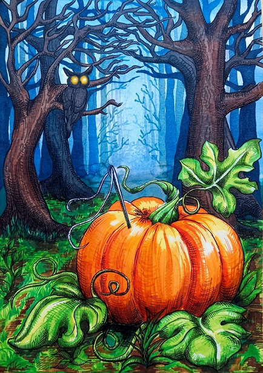

READ THE TALES
これらの物語は、アポストロヴェ周辺の村々で語り継がれ、人々の記憶の中で大切に受け継がれてきた昔話です。現代の読者にも親しみやすい形で再話され、このページではそのうちの一編を全文でお読みいただけます。あわせて、英語版・日本語版の挿絵入り書籍もご紹介しています。
These stories are folktales that have been passed down in villages around Apostolove and carefully preserved in people's memories. They have been retold in a form accessible to modern readers. On this page you can read one of them in its entirety, and also discover the illustrated English and Japanese editions.
Below you can read the first tale from the collection. The complete anthology is available on Amazon.
以下では、コレクションの最初の一編をお読みいただけます。完全版のアンソロジーはAmazonでご購入いただけます。

Pumpkin and Needle
"Pumpkin and Needle" tale shares the story of an overly optimistic pumpkin and an overly pessimistic iron needle who set off on an unlikely adventure to save their witch mistress.
前向きすぎるカボチャと、悲観的すぎる鉄の針。正反対の二人は、魔女の主人を救うために力を合わせることになります。

続きを読む(日本語)
カボチャと一本の針
むかしむかし、森のはずれに寄りそう小さな村の、いちばんはずれの小さな家に、ソロミヤという若くて美しい女が住んでいました。
彼女の髪は夜のように長く黒く、目は星のように輝いていました。そして人々には、夏のそよ風のようにやさしい声であいさつをしていました。ソロミヤは本物の魔女でしたが、だれも彼女を恐れてはいませんでした。むしろ、そのやさしさと腕前ゆえに、みんなから尊敬されていました。遠くの村からも人々が訪ねてきました。薬になる草を求める者、助言を求める者、そして恋のお守りを願う者もいました――もっとも、なんのためのお守りかを口に出す者はいませんでしたが。
ソロミヤの家には、不思議なものがたくさんありました。梁の下には、香りのよい草が吊るされていて、それは眠りを誘ったり、どんな病でも癒したりすることができました。机の上には、彼女が赤や黄や青の糸で刺繍を始めたルシュニク¹が置かれていました。それは人の運命をよい方へと織り変えるものでしたが、まだ完成していませんでした。かまどの中では、いつもお腹を空かせた火の精が燃えていて、ソロミヤの薬を休むことなく煮たり蒸したりしていました。
そしてベンチの下には、大きくて丸々としたカボチャが転がっていました。陽気で、とてもおしゃべりなカボチャでした。
「いやあ、ぼくがどれだけ運がいいか、きっと想像もつかないだろうね！」
カボチャは、家の中の道具たちによくそう話していました。
「ぼくがまだ若かったころ、ソロミヤに九回も結婚を申し込みに行ったんだ。でもそのたびに、カボチャを渡されてね²！それでぼくは言ったんだ、『そのうちカボチャもなくなってしまうさ！』ってね。だから十回目は秋じゃなくて、二月に行ったんだよ。そしたら本当に、カボチャがなかったんだ！彼女は笑って――ぼくをカボチャに変えたのさ！」
ここまで話すと、カボチャは大声で笑いました。
「うそつき！」
家のなかで一番の正直者だと知られている水差したちが腹を立てて言いました。
「最初は弟子にしてくれって頼んだのに、すぐ追い返されたくせに。そのあとで求婚しに来たけど、信じてもらえなかったんだよ！『もう一度来たらカエルにしてやる』って言われたじゃない！」
「それでも、ぼくは運がよかったんじゃないかい？」
カボチャは楽しそうに言いました。
「カエルなんて冷たくて気味が悪いし、だれにも好かれない。でも見てごらん、この立派なぼくを！」
「それはね、カエルは生き物だから、家の中を飛び回ってしまうでしょう？」
そう答えたのは、鋼の針でした。
「でもあなたは――ただそこにいるだけ。あの人は、もうあなたを見るのもいやになったのよ。わたしたちも同じだけどね、この話にはもううんざりよ…」
ソロミヤは刺繍の手をとめ、その針をなくさないようにカボチャに刺しました。そしてもちろん、そのこともすぐに忘れてしまいました。それからというもの、この二人はずっと一緒に暮らすことになりましたが、あまりにも違いすぎて、何一つ意見が合うことはありませんでした。
「あなたはもともと人間だったのに、魔女の言いつけに背いたせいでカボチャになってしまったのよ…なんて哀れな運命でしょう」
針はため息をつきました。彼女はいつでも、何にでも悪いところばかり見ていました。
「ははは！でも今はあたたかいし、働かなくてもいいんだ！」
カボチャは明るく答えました。
「それに、もし魔法が解けて人間に戻れたら、弟子にしてもらえる約束なんだ。こんなに運がいいこと、あるかい！」
こうして二人は、毎日のように言い合いをしていました。どんなことについても、意見が合うことはありませんでした。
雨が降れば、カボチャは言います。
「ははは、いい天気だね！涼しくて、作物にはぴったりだ！」
すると針は言います。
「もうおしまいよ…こんな天気じゃ、わたしはさびてしまうし、あなたもカビだらけになるわ！」
晴れの日には、カボチャは喜びます。
「ああ、あたたかい！明るい！空もこんなに青い！なんて幸運なんだろう！」
すると針は嘆きます。
「ああ…これで終わりよ。熱でわたしは鈍くなるし、あなたは干からびてしまうわ…」
こうして日々は過ぎていきました。危険が忍び寄り、暗い時代が訪れていたにもかかわらず、この不思議な家の住人たちは、そのことを何も知りませんでした。
ところがある日、ソロミヤは用事で出かけたまま、夕方になっても帰ってきませんでした。
翌朝になっても、まだ戻りません。
さらにもう一日が過ぎると、村のはずれの家に住む者たちは、少しずつ不安になりはじめました。
「今まで一度もなかったのになあ。」
かまどの中で弱まりつつあった火の精が、嘆くように言いました。
「一晩出かけても、必ず朝には戻ってきたのに。あの人はわたしをとても大切にしてくれた…わたしは彼女のお気に入りだったのに…」
「ご主人さまに何かあったに違いない」
窓の外から、年老いたプガーチ³が言いました。
「敵のモスクワ兵4たちが村に来たと聞いた。おまえたちの家の戸も叩いたが、ご主人さまは開けなかったそうだ…」
もちろん、針も口を開きました。
「もうおしまいよ！ ソロミヤは二度と戻ってこない！ なんて恐ろしいの…わたしたちはこの空っぽの家に、永遠に閉じ込められてしまうんだわ。もう人間の顔を見ることも、人間の声を聞くこともないのよ…」
「探しに行こう」
やがてカボチャが言いました。
「ソロミヤを見つけるんだ。そうすれば、またすべてうまくいくさ」
「探しに行く？ 外へ出る？ だめだ、だめだ！ 行ってはいけない！ ソロミヤが禁じたんだ！」
鍋ややかんや椅子たちが、いっせいに叫びました。
その通りでした。この小さな家にいる魔法にかけられたものや生きものたちは、みなソロミヤの言いつけにしっかり縛られていたのです。だれひとり、自分の意思で外へ出ようなどとは思いもしませんでした。
――ただ一つを除いては。
「ははは！ここがぼくの運のいいところさ。だって、ぼくには何も禁じられていないからね！」
カボチャはうれしそうに言いました。
「それはあなたが、ちっぽけな存在だからよ。」
針はため息をつきました。
ソロミヤはこれまで何度も、カボチャのおしゃべりにうんざりして外へ出そうとしましたが、それでもカボチャは、いつのまにかまたベンチの下へ戻ってきてしまうのでした。
けれどこのとき、カボチャは決心しました。そして、ゆっくりと転がり出したのです。
「ちょっと、何をするつもりなの！」
針はおびえて震えながら叫びました。
「見ればわかるだろう？」
カボチャは元気よく答えました。
「ソロミヤを探しに行くんだよ。いっしょに来る？」
「行くって、どこへ？ 気でもおかしくなったの？」
針はさらに大きな声で叫びました。
「森で死にたいなら勝手にしなさい。でもわたしはいやよ！ それに、外へ出るのは禁止されているの！」
針は必死に抜け出そうとしましたが、ソロミヤはカボチャに深く刺していたため、びくともしませんでした。
「大丈夫、大丈夫さ、小針。きみは外へ出るんじゃない。ぼくの上に乗っているだけさ」
カボチャは楽しそうに言いました。
「さあ、しっかりつかまって。きっとすごい冒険になるよ！」
「大惨事になるに決まってるわ！」
針は叫びましたが、カボチャは止まりませんでした。戸口まで転がっていき、ぴょんぴょんと跳ねました。
「おーい、扉、開けておくれ！」
「開いて！ 開いて！」
家の中の者たちも声をそろえました。
「だめ！ 開けてはだめ！」
針は叫びました。
「ここにいれば安全なの！ 外には不運と死しかないのよ！」
扉はしばらく中の声に耳をすませていましたが、やがて、ぎい…と音を立ててゆっくり開きました。まるでこう言っているかのように。
――幸運を…見つけて…ご主人さまを助けて…
「ははは！ 運ならいくらだってあるさ！」
カボチャは元気に叫びました。
「みんな、留守を頼んだよ！」
そう言い残して、楽しげに道へ転がり出ていきました。
さて、針はどうなったでしょうか。
カボチャに深く刺さったまま、いっしょに外へ出てしまいました。そしてもちろん、不安そうに言い続けます。
「ああ、きっと悪いことになるわ…きっと彼女は見つからない…見つかったとしても、もう遅いわ…わたしたち、生きて帰れない…」
針は嘆き、カボチャは笑いながら、二人は森へとたどり着きました。
森の中では、しばらく道に迷い、動物たちに道をたずね、古い木々のささやきを聞きました。
やがて二人は、ひらけた場所に出ました。そこでは敵のモスクワ兵たち4が、まるで自分の家のようにふるまっていました。
そして――そこに、主人のソロミヤの姿もありました。
彼女は木に縛りつけられ、鉄の鎖でつながれていたのです。
「ああ、なんてこと…！」
針は泣き出しました。
「手も縛られて、口もふさがれて…これじゃ魔法も使えない…かわいそうなご主人さま…きっと殺されてしまう…そうしたら、わたしたちも…」
「いや、違うよ」
カボチャは言いました。
「ぼくたちはまだ何て運がいいんだろう！ご主人さまは生きているじゃないか！ あとは鎖を外せばいいだけだ。そのあとは、ご主人さまがなんとかしてくれるよ！」
「でも、どうやって外すの？」
針は言いました。
「わたしは鋼でできているけど、小さな針にすぎないし、あなたはやわらかいカボチャよ。わたしたちに何ができるっていうの？ 何もできないわ…」
「まあ見ていなよ、小針」
カボチャは言いました。
「ぼくはぼくにできることをやるさ！」
そう言うと、カボチャはひらけた場所へ転がり出ました。
「おい、そこのモスクワ兵ども！ みんなここで破裂してしまえ！」
大声で叫びます。
「地獄の悪魔たちがおまえたちを探しているぞ！ 見つからないから、ぼくが教えてやる！ おーい、悪魔たち、こいつらはここだ！」
兵士たちはあわてて武器をつかみ、カボチャを追いかけました。
けれどカボチャはすばやく転がり、ぴょんぴょん跳ねながら、さらに大声で叫びます。
「捕まえろ！ 連れていけ！ 地獄へ引きずりこめ！ 小さな悪魔でさえだれかに愛されるのに、おまえたちは違う！ 家で待っている者なんて、だれもいないぞ！」
やがて、一人の兵士がカボチャに追いつき、思いきり蹴りつけました。
熟したカボチャは、ぱん、と割れて、ばらばらに飛び散りました。
最後にひとこと叫ぶのがやっとでした。
「ぼくの中身で滑ってしまえ！」
針は「だから言ったのに」と言う間もなく、草の上に落ちました。
そのとたん、一人の兵士がカボチャの種とぬめりに足を取られて滑り、顔から地面へ倒れ込みました――ちょうど針のそばへ。
さて、針はどうするのでしょうか。
針は一瞬すくみましたが、やがて勇気をふりしぼり、ぴょんと跳び上がると、力いっぱい兵士の目を突きました。
兵士は痛みに叫び声をあげ、その場でのた打ち回りました。
はじめ、カボチャとの旅がうまくいくはずがないと思っていた針は、この日こそ自分の人生でいちばん不幸な日だと思っていました。けれど、砕け散ったカボチャを見たとき――胸の奥から、強い怒りがわきあがってきたのです。
こんなにも怒ったことは、これまで一度もありませんでした。カボチャにからかわれていたときでさえ、こんな気持ちにはならなかったのです。
復讐したい――その思いが、針の中に燃え上がりました。
そして針は、自分がまだ鋭いままであることを、うれしく思いました。
いつも悪いことを考え、疑い、用心し、人に注意してきた――その積み重ねが、彼女の先を鈍らせなかったのです。
針は大胆に、軽やかに、ひらけた場所を跳ね回りはじめました。そして兵士たちを、腹に、足に、顔にと、次々に突き刺していきます。
兵士たちは大混乱におちいりました。目の前にはだれもいないのに、ただ鋭い痛みだけが襲ってくるのです。
さあ、大騒ぎです。
兵士たちは見えない相手に向かって腕を振り回し、殴り、蹴り、転げ回り、跳ねまわりましたが、針には触れることもできず、ただ互いを打ち合うばかりでした。
木に縛られたまま、ソロミヤは笑いはじめました。
その笑い声が大きくなるほど、兵士たちの恐れも深くなり、ついには悲鳴をあげて四方へ逃げ出しました。
針はするりとソロミヤの鎖の鍵穴に入りこみました。
かちり、と音がして、錠が外れます。鎖は地面へ落ちました。
ソロミヤは地に足をつけ、手をひと振りしました。すると鎖は蛇のようにうねりながら、森の奥へと消えていきました。
その足元から、黒い霧が立ちのぼります。
空はたちまち暗くなり、あたりのすべてが息をひそめたかのように静まり返りました。その怒りを感じ取ったかのように、遠くの村では犬たちが遠吠えし、人々はざわめきました。
霧は森の中を這うように広がり、地面をかすめたところには、底の見えないぬかるみが生まれました。兵士たちは次々とそこに沈んでいきます。
逃げのびた者もいましたが、霧はすぐに追いつき、まとわりつき、のみこんでしまいました。あとには白い骨だけが残り、地に落ちました。
森は叫び声と呪いと恐怖で満ちました――
けれど、やがてすべては静まり返りました。
霧は消え、ぬかるみも消え去りました。鳥たちはまた、いつものようにさえずりはじめます。
ただひとつ、小さな、きらりと光る鋼の針の、かすかな泣き声だけが残っていました。
針はこれまでにないほどの悲しみを感じていました。目の前には、ばらばらになったカボチャのかけらが散らばっています。
彼が生きていたころは、いつも言い合いばかりしていた二人でしたが、今はどうしようもなく悲しかったのです。
ソロミヤはそっと近づき、針を手に取りました。
「もう大丈夫よ。泣かないで、小針」と、やさしく言いました。
「あなたはわたしを助けてくれた。そのお礼をしなくてはね。人間になりたい？」
それは、とても大きな褒美でした。魔女がそのような変化を起こせるのは、一生に一度きりなのです。
木々でさえ、ざわめき、驚いたようにささやきました。
けれど針は、泣きやみませんでした。
「わたしじゃなくて、カボチャをほめてあげて…！」
針は言いました。
「あの子が、あなたを助けに行ったのよ。わたしは鋼でできているのに、何もかもが怖かった。でもあの子は…一撃で砕けてしまったのに、少しも怖がらなかった…」
「それは、あの子がおばかさんだったからよ」
ソロミヤは言いました。
「ときには恐れることも必要なの。相手が強いときはなおさらね。――それは、わたしも忘れてはいけないこと。いまは暗い時代なのだから」
「そうかもしれない…でも…」
針は言いました。
「あの子がいなかったら、わたしは家から出られなかった。ここに来ていても、きっと隠れていたわ。だから、あなたを助けたのはわたしじゃない。カボチャなの…見て…こんなになってしまって…」
「このカボチャには、このカボチャの時が来ていたのよ」
ソロミヤは静かにほほえみました。
「でも大丈夫。あの子にはまだ道がある。あの子はいつも、よいことだけを信じていたから」
少し考えてから、こう続けました。
「いいでしょう。わたしの力を、少し分けてあげる。でもその代わり――あなたを人間にする力は残らないわ」
「かまわないわ！」
針はすぐに答えました。
「わたしは人間になりたくない。今はまだ。それに、あなたの刺繍も終わっていないでしょう？ わたしみたいに鋭い針、ほかにいないもの」
それを聞いて、ソロミヤは笑いました。
そしてしゃがみこみ、地面に手を触れました。
ソロミヤはじっと動きません。
時間が流れていきます。
やがて、空が明るくなり、太陽がのぼりました。
そのとき――ソロミヤの指先から、まばゆい光がほとばしりました。
光はあたり一面を満たし、カボチャのかけらすべてを包みこみます。
針はまばたきをしました。
そして目を開けると――そこには、一人の背の高い人影が立っていました。
「カボチャ…あなたなの？」
針はうれしそうに叫びました。
けれど、ふと気づいて、目を細めます。
「……カボチャ？」
その姿は背が高く、肩も広く――けれど、まぎれもなく女の姿でした。
かつてソロミヤに求婚していた若者は、立派な口ひげをたくわえた、たくましい男でした。
けれど今は、やわらかなあご――ひげの跡など微塵もない――、赤くほほえむくちびる、そして赤褐色の髪が長く編み込まれていました。
「さて……どうしてこうなったのかしら？」
ソロミヤは首をかしげましたが、その目は楽しそうに笑っていました。
「かけらが多すぎて、元どおりには戻らなかったのね。少し混ざってしまったのかも。――どうしましょう？」
けれど、カボチャの娘は、からりと笑いました。
「ははは！ どうするって？ わたしはわたしよ！」
「手もある、足もある、ちゃんとそろってる。それで十分じゃない！」
「それにソロミヤ、言ってたでしょう？ 魔法が解けて人間になれたら、弟子にしてくれるって！ 約束よね？ 魔法、教えてちょうだい。あとは自分でなんとかするから！」
「何を言っているの、これは一大事なのよ！」
針は叫びました。
「もう、どうしようもないわね！」
けれどその声には、どこかほっとした響きがありました。
ソロミヤはため息をつきました。
「まだあなたに、わたしの魔法は早いわ」
そう言いました。
「自分を信じるのはいいこと。でも、ときには少し疑うことも必要よ」
カボチャの娘は、荒れた地面と、残された武器を見つめて、静かに言いました。
「わたしは疑うのは苦手だわ。でも……ときどきは立ち止まって考えないとね」
「いつも前だけ見て走っていたら、まわりに気づかずに自分の運命を通りすぎてしまうかもしれないもの」
ソロミヤは微笑み、何も言いませんでした。
ただ、それ以上は否定しませんでした。
「さあ、帰りましょう」
針がやさしく言いました。
「ご主人さま、あなたにもきっと手助けは役に立つはずです。刺繍だって、そろそろ終わらせないと」
「三人なら、きっと早く仕上がりますし、運命だって切り開けます」
注釈
1．ルシュニク（Rushnyk）
ウクライナの伝統的な刺繍布で、運命や守りと深く結びついています。儀式や大切な場面で使われる。
2．カボチャを渡す（求婚の断り）
ウクライナの風習では、求婚を断るときにカボチャを渡すことがある。「カボチャをもらう」は断られることを意味する。
3． プガーチ（Pugach）
大型のフクロウ（ワシミミズクの一種）で、民話ではしばしば不吉さや神秘と結びついている。
4． モスクワ兵（Moscovites）
ウクライナの民話などで使われる、敵としてのロシアの兵士を指す呼び名。
Pumpkin and Needle(英語版)
Long, long ago, in the farthest hut of a small village nestled at the edge of the forest, there lived a young and beautiful woman named Solomiya. Her hair was long and dark as the night, her eyes shone like stars, and she greeted all who came to her with a voice as gentle as a summer breeze. Solomiya was a true witch—yet no one feared her. On the contrary, all respected her for her kindness and her skill. Even from distant villages people would come: some for healing herbs, some for counsel, and some for love charms—though, of course, none would ever admit to that.
There were many wondrous things in Solomiya’s house. Beneath the rafters hung fragrant herbs on iron hooks, herbs that could lull one to sleep or cure any ailment. Upon the table lay an embroidered rushnyk cloth¹, which she had once begun to stitch with red, yellow, and blue threads, shaping human fates for the better—yet never finished. And in the stove burned the ever-hungry Fire Spirit, ceaselessly brewing and steaming Solomiya’s potions.
And beneath the bench lay a great round-bellied Pumpkin. He was of a merry disposition and exceedingly talkative.
“You cannot imagine how fortunate I am!” he would often declare to the household. “When I was a young man, I went to Solomiya nine times to ask her to marry me—and each time she gave me a pumpkin2! Then I said: ‘One day you will run out of pumpkins!’ So the tenth time I came not in autumn, but in February. And indeed, she had none left! She laughed—and turned me into a Pumpkin!”
At this point he would burst into loud laughter.
“Liar!” cried the Pitchers—for, as everyone knew, they were the most truthful in the house. “First you begged her to take you as an apprentice, and she sent you away at once. Only then did you come asking to marry her, and she did not believe you! She said that if she saw you again, she would turn you into a frog!”
“And was I not fortunate, then? Hm?” the Pumpkin replied cheerfully. “Frogs are cold and ugly, and no one cares for them—but look what a fine fellow I’ve become!”
“That is because a frog is a living creature—it would be hopping about the house for all to see,” answered the steel Needle. “But you—she simply could not bear the sight of you any longer, you had wearied her so. As, I might add, you have wearied all of us with this tale…”
When Solomiya set aside her embroidery, she stuck the Needle into the Pumpkin, so as not to lose it—and, of course, forgot about it as well. From that time on, the two remained always together, and were so unlike one another that they never agreed on anything at all.
“You were once a man, but you disobeyed the witch, and so you became a Pumpkin… What a dreadful fate,” sighed the Needle, who saw only the worst in everything.
“Ha-ha-ha! And yet now I am warm, and need not work at all!” replied the Pumpkin, who saw only the best. “And if I should ever learn how to break the spell, she has promised to take me as her apprentice. Now that is what I call good fortune!”
So they went on, day after day, never once agreeing on anything. If rain fell outside, the Pumpkin would say:
“Ha-ha-ha! What fine weather this is! See how cool it is—splendid for the harvest!”
And the Needle would answer:
“Well then, this is the end of me! Rust will eat me away in such weather—and you, Pumpkin, will be taken by mold!”
If the sun shone bright, the Pumpkin rejoiced:
“How warm, how bright! And a blue sky! What a fortune! What more could one wish for?”
And the Needle would lament:
“Oh dear, this is the end—I shall grow dull from the heat, and you will shrivel away…”
Thus life went on. And though danger gathered and dark times had come, the inhabitants of the enchanted hut knew nothing of it.
But one day Solomiya went out and did not return by evening. Nor was she there in the morning. Another day passed, and little by little all who dwelt in the hut at the edge of the village began to grow uneasy.
“Such a thing has never happened,” lamented the hungry Fire Spirit, now dying down in the stove. “If she left for the night, she always returned by morning. She cared for me so well—I was her favorite.”
“Something must have befallen the mistress,” said the old Pugach owl³ from beyond the window. “I heard a troop of enemy Moscovites came through the village. They knocked at your door as well—but the mistress did not open.”
And of course, the Needle spoke:
“All is lost! Solomiya will never return to us! What a horror! We shall remain forever shut in this empty house. Never again shall we see a human face, nor hear a human voice…”
“We must go and find her,” said the Pumpkin at last. “We will find Solomiya—and all will be well again.”
“Search? Leave? We cannot! We must not! She forbade it!” cried the Pots, the Pitchers, and the Stools.
And indeed, all the magical things and creatures in that little house were bound by Solomiya’s command. None of them so much as dreamed of stepping beyond the threshold of their own will.
None, except…
“Ha-ha-ha! Now this is where fortune favored me—no one ever forbade me anything!” the Pumpkin rejoiced.
“That is only because you are quite worthless,” sighed the Needle.
More than once had Solomiya tried to set the Pumpkin out in the yard when his chatter wearied her, yet somehow he always found his way back beneath the bench.
This time, however, he made up his mind—and slowly began to roll away.
“Hey, what are you about?” cried the Needle in alarm, trembling.
“And what does it look like?” the Pumpkin answered brightly. “Why, I am about to seek Solomiya, of course. Will you come along?”
“Come along? Where to? Have you lost your wits?” the Needle cried all the louder. “If you wish to die somewhere in the forest, then go without me! And in any case—I am forbidden to go outside!” She trembled harder still, struggling to free herself—but Solomiya had stuck her far too deep…
“Do not be afraid, little Needle,” said the Pumpkin cheerfully. “You are not going outside—you are riding upon me. Now hold tight! I have a feeling this will be a grand adventure!”
“A disaster, you mean!” the Needle cried—but the Pumpkin did not stop. He rolled up to the door and bounced before it.
“Ho there, door—open!”
“Open! Open!” cried the other inhabitants of the house.
“No!” shouted the Needle. “We must not! Only here are we safe! Outside there is nothing but misfortune and death!”
The door listened a while to the voices within, and then slowly creaked open, as though whispering: “Good luck… Find her… Help the Mistress…”
“Ha-ha-ha! As for luck, I have plenty of it!” called the Pumpkin in farewell. “You look after the house!”
And with that, he rolled merrily out onto the road.
And what of the Needle? Deeply lodged within the Pumpkin, she too found herself out of doors—and, of course, did not cease her lamenting:
“Oh, this bodes ill, this bodes very ill! We shall never find her! And even if we do, she is surely dead already… And we shall never return alive…”
Thus the Needle cried and the Pumpkin laughed, and together they rolled on until they reached the forest. There they wandered a while along the winding paths, asked their way of the beasts, and listened to the murmuring of old trees.
Before long, they came upon a clearing where a band of enemy Moscovites had made themselves at home. And there they saw their mistress—Solomiya—bound to a tree with iron chains.
“Oh, dear!” wept the Needle. “They have shackled her, bound her mouth, tied her hands! She cannot work her magic now… Oh, our poor mistress! They will kill her—and then we too shall perish…”
“No,” said the Pumpkin. “Look how fortunate we are! Our mistress lives! All that remains is to free her from those chains—and then she will deal with them herself!”
“But how are we to break them?” the Needle cried. “I may be made of steel, but I am small—and you are but a soft Pumpkin. What use can we possibly be? No, we can do nothing at all!”
“Just watch, Needle, and see what I can do!”
And with that, the Pumpkin rolled out into the clearing.
“Hey, you wretched Moscovites! May you all burst where you stand! The devils have long been searching for you in hell and cannot find you—so I shall help them! Ho there, devils! Come and take them—they are here!”
The soldiers started in alarm, seized their weapons, and rushed to catch him. But the Pumpkin rolled swift as ever, bouncing along and shouting all the louder:
“Catch them! Seize them! Drag them down to hell itself! Even the smallest devil is loved by someone—but you, ragged donkeys, have no one waiting for you at home!”
At last one of the soldiers caught up with him—and struck him hard with his foot.
The ripe Pumpkin burst apart and scattered into a hundred pieces. Only just did he manage to cry out:
“May you slip upon my insides!”
The Needle had not even time to say, “I warned you,” before she fell into the grass. At once another soldier slipped upon the wet pulp and seeds and fell face-first beside her.
What was the Needle to do?
At first she was afraid—but then she gathered all her courage, sprang up, and drove herself with all her might straight into the Moscovite’s eye. He shrieked in pain and spun wildly on the spot.
The Needle, who had been certain from the very beginning that nothing good would come of their journey, and who had thought this the most miserable day of her life, glanced at the shattered Pumpkin—and suddenly felt a fierce rage rise within her. Never had she been so angry, not even when he had pestered her with his endless chatter. A thirst for vengeance seized her.
And she was glad—glad that she was still sharp.
For though she had spent every day fearing the worst, doubting, fretting, and warning others, it was those very fears that had kept her edge from dulling.
With sudden, reckless boldness, the Needle began to dart across the clearing, pricking and striking at the Muscovites—here in the belly, there in the leg, then in the face…
They were thrown into confusion, for they saw no one before them—only felt the sharp sting of her blows.
What a commotion broke out! The soldiers flailed at the unseen foe, swinging their arms, striking with fists and boots, stumbling and leaping—but could not catch her, and only battered one another instead.
Bound to the tree, Solomiya began to laugh.
And the louder she laughed, the deeper fear took hold of her enemies—until at last they broke and fled in all directions.
The Needle slipped lightly into the keyhole of the shackles. The lock gave a sharp click—the chains fell away at Solomiya’s feet.
She stepped onto the ground and raised her hand—and the chains slithered away like snakes into the undergrowth. From beneath her feet a dark mist began to rise.
At once the sky dimmed. All nature seemed to hold its breath beneath the weight of her wrath. Even in the distant village, dogs began to howl, and people stirred uneasily.
The mist crept through the forest, and wherever it touched the earth, a deep and bottomless bog spread open, swallowing the enemy one by one. And those who managed to flee it found no escape—for the mist overtook them, clung to them, devoured them—until nothing remained but white bones falling upon the ground.
The forest rang with cries, with curses, with terror.
And then suddenly all fell silent.
The mist thinned and vanished. The bog sank away. Even the birds resumed their ordinary songs.
Only one sound remained—the quiet weeping of a small, bright steel Needle.
Never in all her life had she known such sorrow as now, when she beheld the scattered pieces of the Pumpkin. Though they had plagued one another all their days, now her grief was beyond words.
Solomiya came to her and gently took her into her hands.
“All is well now. Do not weep, little Needle,” she said softly. “You have saved me. And for that, I shall reward you richly. Tell me—would you become human?”
This reward was no small thing, for a witch could grant such a transformation only once in her lifetime. Even the trees seemed to stir in wonder, whispering among themselves.
But the Needle only wept on:
“It is not I who should be rewarded—but the Pumpkin! It was he who hastened to your rescue. I am made of steel, yet I was afraid of everything… and he—he shattered at a single blow, yet knew no fear.”
“Because he was a fool,” said Solomiya. “At times, fear is needed—when the enemy is stronger. It is something I, too, must remember. Dark times have come upon our land.”
“That may be so… but without him, I would never have left the house. Even had I found myself here, I would have hidden in fear. It was not I, but the Pumpkin who saved you! And look what has become of him—nothing but scattered pieces…”
“This Pumpkin’s time had come, one way or another,” Solomiya said with a faint smile. “And yet—do not despair. There may still be a way for him, for he always believed in the good. Very well—I shall share a little of my power with him. Let it be so. But then… you must wait. There will not be enough strength left to make you human as well.”
“I do not wish to be human!” the Needle replied at once. “Perhaps one day—but not now. And you have not yet finished your embroidery. Where would you find another needle as sharp as I?”
At this, the witch laughed.
Then she crouched and laid her hand upon the earth. She grew still.
Time passed—nothing stirred.
Then dawn slowly broke across the clearing, and the sun rose into the sky…
And suddenly, from Solomiya’s fingers burst a blinding ray of light. It swept across the clearing, over every shattered fragment of the Pumpkin.
The Needle blinked—and when she opened her eyes, a tall figure stood before her.
“Pumpkin, it’s you!” she cried in joy.
Then, noticing something strange, she narrowed her eyes:
“Pumpkin…?”
The figure was tall and broad-shouldered—yet beyond all doubt, it was a woman. The young man who had once come courting Solomiya had been handsome and quick, with a long forelock and proud mustache. But now she saw a soft chin, no trace of stubble… red, smiling lips… and copper hair braided into a thick plait.
“Hm… how did that come to pass?” Solomiya mused, though her eyes gleamed with mischief. “There were so many pieces—it seems they would not all go back as they were. Some must have been mixed together… What are we to do now?”
But the Pumpkin-girl only laughed, just as before seeing only the good in everything:
“Ha-ha-ha! What is there to be done? I am myself! I have hands, I have feet—everything is as it should be. What more could I need? And you said, Solomiya—if I could break the spell and become human, you would take me as your apprentice! Teach me your craft—and I will sort the rest out in time.”
“Don’t speak nonsense! This is a catastrophe!” cried the Needle. “Oh, how dreadful it all is…” Yet there was, beneath her voice, a note of relief.
Solomiya sighed.
“It is too dangerous for you to wield my magic,” she said sternly. “It is good that you believe in yourself. But at times, a little doubt is no bad thing.”
The Pumpkin-girl looked out over the trampled clearing, at the weapons left behind, and sighed:
“I do not know how to doubt. But… perhaps one must sometimes stop and think. If you always rush forward without looking around, you may run straight past your own fate… is that not so?”
Solomiya smiled, and said nothing. Nor did she argue further.
“Let us go home,” said the steel Needle softly. “You will have need of help, Mistress. And it is time your embroidery was finished… With three of us, the work is lighter—and fate, perhaps, a little brighter.”
Cultural notes
1. Rushnyk
A traditional Ukrainian embroidered ceremonial cloth, associated with fate, protection, and ritual.
2. Giving a pumpkin
In Ukrainian tradition, “to give a pumpkin” means to refuse a suitor.
3. Pugach
A large nocturnal bird (eagle-owl), often associated with omens and witches.
Гарбуз та голка(ウクライナ語)
Давно-предавно у крайній хатині маленького села, що примостилося попід лісом, жила молода вродлива жінка на ім’я Соломія. Її волосся було довгим і темним, як нічна пора, очі сяяли, мов зірки, а віталася вона до людей голосом ніжним, наче той вітерець літній. Соломія була справжнісінькою відьмою-чаклункою, та ніхто її не боявся, а навпаки — усі поважали за доброту та вміння. Люди навіть із навколишніх сіл часто приходили до неї: хто за лікувальними травами, хто за порадою, а хто й за приворотами — та, звісно ж, у такій справі ніхто не зізнавався.
У Соломіїній хаті було багато дивовижних речей: під сволоками на гаках висіли духмяні трави, здатні навівати сон або вилікувати будь-яку хворобу. На столі лежав рушник1, який вона колись почала вишивати червоними, жовтими та синіми нитками, змінюючи на краще людські долі, та так і не закінчила. У печі палахкотів вічно голодний Дух Вогню, який безкінечно запарював та варив Соломії чарівне зілля.
А під лавою лежав великий пузатий Гарбуз. Він був веселої вдачі та вельми балакучий.
— Не уявляєте, як мені пощастило! — любив розповідати він хатньому начинню. — Я ж, коли парубком був, дев’ять разів ходив до Соломії женихатися, а вона щоразу мені — гарбуза2! Тоді я сказав: «Колись у тебе закінчаться гарбузи!» — і вдесяте прийшов не восени, а аж у лютому. І справді, гарбузи у неї закінчилися. Тоді вона засміялася і перетворила мене на Гарбуза!
На цьому місці він голосно реготав.
— От брехун! — обурювалися Глечики, що, як відомо, були найправдивішими в хаті. — Ти спочатку хотів до Соломії в учні напроситися, та вона тебе одразу прогнала. А вже після цього женихатися приходив, та вона тобі не повірила! Сказала, якщо побачить тебе знову, то на жабу перетворить!
— Чи ж мені не пощастило? Га? Жаби холодні та бридкі, ніхто їх не любить, а я ось яким красенем вийшов!
— Це тому, що жаба це живе створіння, стрибала б тут по хаті в усіх перед очима, а вона вже бачити тебе не могла, так ти їй набрид, — відповідала сталева Голка. — Як, до речі, і нам усім із цією історією…
Соломія, коли облишила вишивати свій рушник, встромила ту Голку в Гарбуз, щоб її не згубити. І, звісно ж, про неї теж забула. Відтоді ці двоє жили завжди разом і були настільки різними, що ніколи ні в чому не погоджувалися.
— Ти був раніше людиною, та не послухався відьми-чарівниці, тож і став Гарбузом… Яка жахлива доля! — зітхала Голка, яка завжди в усьому бачила тільки погане.
— Ха-ха-ха! Зате я тепер у теплі, і працювати не треба! А як зможу себе розчаклувати, людиною стати, то Соломія візьме в учні. От же ж пощастило! — відповідав Гарбуз, який завжди у всьому бачив тільки хороше.
Так вони розмовляли кожного дня, ніколи не маючи на жодну річ чи на жодну подію спільного погляду. Якщо на вулиці йшов дощ, Гарбуз казав:
— Ха-ха-ха, яка нині гарна погода! Он як прохолодно стало! Це ж для врожаю дуже добре!
А Голка відповідала:
— Ну ось, прийшов мені кінець! Іржа мене з’їсть від цієї погоди, та й тебе, Гарбузику, цвіль сточить!
Якщо було сонячно, Гарбуз тішився:
— Як тепло, світло. А небо яке блакитне! От же ж пощастило! Що ще потрібно?
Голка ж плакала:
— Ой-ой, це кінець, я затуплюся від спеки, а ти висохнеш…
Життя йшло своїм ладом, і хоч довкола нависла небезпека та настали темні часи, мешканці чарівної хати про те нічого не відали.
Та одного разу Соломія пішла кудись у своїх справах і ввечері не повернулася додому. І на ранок її не було. Минув ще один день, і поступово всі, хто жив у хаті на краю села, почали хвилюватися.
— Ніколи такого не було, — бідкався голодний Дух Вогню, що згасав у печі. — Якщо вона йшла на ніч, уранці завжди поверталася. Вона ж так дбала про мене, я ж її улюбленець.
— Мабуть, щось трапилося з господинею, — обізвався старий Пугач3 за вікном. — Я чув, що у село навідувався загін ворогів-москалів4. Вони стукали і у ваші двері, та господиня не відчинила…
Звісно, Голка теж висловилася:
— Все пропало! Соломія більше до нас ніколи не повернеться! Який жах! Ми назавжди залишимося замкнені у пустій хаті. Ми більше ніколи не побачимо людського обличчя, не почуємо людських голосів…
— Потрібно розшукати її, — вирішив Гарбуз. — Знайдемо Соломію, і все знову буде добре.
— Розшукати? Вийти? Нам не можна! Ми не можемо! Вона заборонила! — загули Горщики, Чайники, Табуретки.
І справді, усіх чарівних речей та істот у цій маленькій хаті міцно тримала Соломіїна заборона. Ніхто з них навіть не мріяв вийти самостійно за поріг. Окрім…
— Ха-ха-ха, ось тут мені й пощастило, бо мені ніхто нічого не забороняв! — зрадів Гарбуз.
— Все тому, що ти такий нікчемний, — зітхнула Голка.
Соломія не раз намагалася виставити Гарбуза на подвір’я, коли той набридав своїми розмовами, та Гарбуз так чи інакше знову повертався на своє місце під лаву.
Цього разу він швидко прийняв рішення та поволі зрушив з місця.
— Е, ти, чого задумав? — крикнула злякано Голка й затремтіла.
— А на що це схоже? — натхненно відповів Гарбуз. — Звісно ж, я покотився шукати Соломію. Ідеш зі мною?
— Як покотився, куди покотився? — ще голосніше зарепетувала Голка. — Якщо ти бажаєш померти десь у лісі, то це вже без мене. І, до речі, мені заборонено виходити на вулицю! — Голка ще сильніше затрусилася, намагаючись вирватися з Гарбуза. Але Соломія її дуже глибоко встромила…
— Та не бійся, Голочко, ти й не виходиш на вулицю, а їдеш на мені. Гей, тримайся, бо я відчуваю, що це буде захоплива пригода!
— Це буде катастрофа, — кричала Голка, але Гарбуз не зупинявся. Він підкотився до дверей і застрибав перед ними.
— Гей, двері, а ну відчиніться!
— Відчиніться! Відчиніться! — заголосили інші мешканці хати.
— Ні! — кричала Голка. — Не можна! Тільки в хаті ми в безпеці! Зовні все погано, нас чекають лише невдача та смерть!
Двері спочатку прислухалися до голосів усередині, а потім зі скрипом повільно відчинилися, мовби промовили: «Удачі… Знайдіть її… допоможіть Господині…»
— Ха-ха-ха! Чого-чого, а удачі мені завжди вистачає! А ви бережіть хату! — гукнув на прощання Гарбуз та бадьоро викотився на дорогу.
А що ж Голка? Вона була глибоко встромлена в Гарбуза і теж опинилася на вулиці. І, звичайно ж, не переставала скаржитися:
— Ой, бути біді, ой, ми її не знайдемо! А якщо й знайдемо, напевно, вона вже померла… І нам не повернутися живими…
Голка репетувала, Гарбуз сміявся — і так удвох вони й докотилися до лісу. А там трохи поплутали стежками, попитали дороги у звірів, послухали розмови старих дерев. Незабаром вони опинилися на галявині, де господарював, наче у себе вдома, загін ворогів-москалів. Там же побачили вони і свою господиню — Соломію, прив’язану залізними ланцюгами до дерева.
— Ой біда, — заплакала Голка. — Вони наділи на неї кайдани, рота зав’язали, руки скрутили. Тепер вона не може чаклувати. Ой, бідна наша господиня! Вони ж уб’ють її, а потім і ми всі помремо…
— Та ні, — заперечив Гарбуз. — Ти дивися, як нам ще пощастило! Господиня наша — жива! Нам тільки ланцюги з неї зняти залишилося. А потім вона сама їх усіх переможе!
— Та хіба ми зможемо зняти ланцюги? Я, хоч і сталева, та маленька Голка, а ти м’який Гарбуз. Хіба може бути від нас хоч якась користь? Ні, ми нічого не здатні вдіяти!
— Ану, дивись, Голко, на що я здатний!
І з цими словами Гарбуз викотився на галявину.
— Гей ви, москалі погані, а най би ви всі тут луснули! В пеклі вас уже давно чорти шукають та не знаходять, то я їм допоможу! Агов, чорти, ідіть, забирайте їх! Вони тут!
Ворожі солдати переполошилися, вхопилися за зброю, руками замахали, кинулися ловити Гарбуза. А він качається швидко, аж підскакує та ще голосніше кричить:
— Ловіть їх, держіть їх, забирайте їх та у саме пекло! Навіть маленьке чортеня хтось любить, а вас, ослів подертих, ніхто вдома не чекає!
Нарешті один із москалів наздогнав Гарбуза та як піддасть його ногою! Від цього стиглий Гарбуз тріснув і розлетівся на безліч шматків. Тільки встиг наостанок крикнути:
— А щоб ти послизнувся на моїх нутрощах!
Голка не встигла навіть сказати: «А я попереджала», — і впала в траву. Якийсь солдат одразу ж посковзнувся на жабуринні із насінням і впав обличчям просто біля Голки.
Що було робити Голці?
Вона спочатку перелякалася, а потім зібрала усю свою мужність, підскочила і щосили штрикнула москалеві прямо в око. Той заверещав від болю, закрутився на місці.
Голка, яка спочатку була впевнена, що нічим хорошим їхні з Гарбузом мандри не закінчаться і гадала, що сьогодні її найнещасніший день у житті, поглянула на розбитого Гарбуза і раптом відчула справжню лють. Вона розгнівалася так, як ще ніколи, навіть тоді, коли Гарбуз дошкуляв їй. Її охопило бажання помсти.
Голка зраділа тому, що залишилася гострою. Хоч вона кожного дня очікувала на щось лихе, сумнівалася, остерігалася і застерігала інших, саме ці постійні тривоги та очікування і не дали їй затупитися.
Голка із веселим зухвальством почала стрибати по галявині й колоти москалів у живіт, у ноги, в обличчя… Вони добряче переполошилися, адже не бачили перед собою нікого, тільки відчували гострий біль від уколів.
Що тут почалося! Вороги намагалися відбитися від невидимки, розмахували руками, били кулаками, ногами, качалися, підстрибували, але голку не могли дістати, а тільки лупцювали один одного.
Прикута до дерева Соломія почала сміятися. І чим голосніше вона сміялася, тим сильніше накривав ворогів страх, і невдовзі вони з криками розбіглися на всі боки.
Голка легко ковзнула в замкову щілину кайданів. Замок клацнув, відімкнувся, і ланцюги впали до ніг бранки.
Соломія ступила на землю, змахнула рукою — ланцюги поповзли зміями в гущину, а з-під її ніг почав підійматися чорний туман. Небо одразу потемніло, вся природа мовби завмерла, відчула її лють. Навіть у селі завили собаки, а люди стривожилися.
Туман поповз лісом, і там, де він падав на землю, утворювалося грузьке бездонне болото, в якому поступово зникали вороги. А кому вдавалося оминути болото і втекти, тих туман наздоганяв і обгризав-обсмоктував — лише білі кістки падали на землю.
Ліс наповнився криками, прокльонами і страхом. Та ось усе раптово стихло, туман розсіявся, трясовина зникла. Навіть птахи почали співати свої буденні пісні. Чутно було лише, як тихенько плаче маленька блискуча сталева Голка.
Ніколи у житті не відчувала вона такої туги, як зараз, коли бачила перед собою розкидані шматки Гарбуза. Хоч за життя вони і дошкуляли весь час одне одному, та зараз їй було невимовно сумно. Соломія підійшла до неї і обережно взяла до рук.
— Все вже добре. Ну, не плач, люба Голочко. Ти врятувала мене. І за це я щедро тебе нагороджу. Хочеш, я зроблю тебе людиною?
Запропонована нагорода була надзвичайно цінною, адже таке дивовижне перетворення відьма могла зробити лише один раз за своє життя. Навіть дерева здивувалися та зашепотіли приголомшено. Лише Голка плакати не перестала:
— Не мене треба нагородити, а Гарбуза! Це ж він поспішив тобі на порятунок. Я зі сталі зроблена, але страшенно всього боялася. А він… Від одного удару розвалився, але страху не знав.
— Тому що дурний був, — сказала Соломія. — Іноді боятися треба, коли ворог сильніший. Це і мені не варто забувати, бо темні часи настали у нашому рідному краю.
— Це правда, але… Без нього я із дому не вийшла б ніколи. Навіть якби сама опинилася на цій галявині, то злякалася б і сховалася. Тож це не я, а Гарбуз тебе врятував! І дивись, що з ним стало — тільки шматочки по землі валяються…
— Цьому Гарбузові вже час прийшов, так чи інакше, — посміхнулася Соломія. — Втім, не переймайся, він ще може знайти вихід, адже завжди вірив тільки в хороше. Гаразд, я з ним своєю силою трохи поділюся. Хай уже буде так, якщо він мене врятував. Але тоді… доведеться тобі почекати, бо сили моєї не залишиться, щоб і тебе зробити людиною.
— Та не хочу я бути людиною! — відповіла Голка. — Може, колись, але не зараз. І ти свою вишивку на рушникові ще не закінчила. Де іншу таку гостру візьмеш?
Відьма тільки розсміялася.
Потім вона сіла навпочіпки і доторкнулася до землі. Завмерла непорушно. Час минав — нічого не відбувалося. Аж ось на галявині розвиднілося, на небо викотилося сонце… І тут із пальців Соломії вирвався сліпучий промінь світла. Він охопив всю галявину, кожен розбитий шматок Гарбуза. Голка моргнула, а коли розплющила очі, то на галявині стояла висока постать.
— Гарбузику, це ти! — радісно закричала Голка.
Раптом вона помітила щось незвичайне і знову примружила очі:
— Гарбуз?
Постать була високою і широкою в плечах, проте, поза всяким сумнівом, належала жінці! Той молодий чолов’яга, що ходив женихатися до Соломії, був гарним, спритним парубком із довгим чубом і розкішними вусами. А тепер Голка бачила м’яке підборіддя, ні сліду щетини… Червоні усміхнені губи… Руде волосся, заплетене в тугу косу.
— Хммм… Як же це у нас вийшло? — спитала Соломія, але її очі лукаво сміялися. — Напевне ж, так багато уламків було, що все докупи не зібрати. Тож якісь частини перемішалися чи щось таке… Що тепер нам робити?
Однак дівчина-Гарбуз радісно розсміялася, бо, як і раніше, бачила тільки хороше:
— Ха-ха-ха! Та що ж тут робити? Я — це я! Руки є, ноги є, усе на місці — що ще треба? І ти, Соломіє, казала: якщо я зможу себе розчаклувати, людиною стати, то візьмеш в учні! Так? Ти мене чаклунській справі навчи, а я вже потім якось розберуся.
— Ти що верзеш? Це ж катастрофа! Ой, як усе погано… — заголосила Голка. Але було помітно, що галасувала вона зовсім не сердито, а навіть трохи з полегшенням.
Соломія зітхнула.
— Небезпечно тобі мої чари знати, — сказала вона суворо. — Це добре, що ти завжди віриш у себе. Але іноді трохи сумніватися не завадить.
Дівчина-Гарбуз подивилася на витоптану галявину, на зброю, що залишилася від солдатів, і зітхнула:
— Сумніватися я не вмію. Втім… зупинитися та подумати інколи треба. Якщо завжди вперед бігти, не озиратися довкола, то можна і повз долю свою пробігти, чи не так?
Соломія посміхнулася та нічого на це не відповіла. Але й заперечувати більше не стала.
— Ходімо вже додому, — попросилася сталева Голка. — Тобі, Господине, допомога ніяк не завадить. Та й рушник твій час уже закінчити… Втрьох і робота легша, і доля світліша.